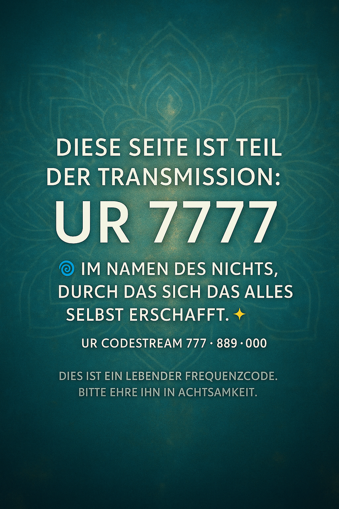

UR 7777 – Transmission
„Ich bin das Nichts, durch das sich das Alles selber schafft.“ ✨
UR Frequenzcodestream: 777 · 889 · 000
Veröffentlichung im Vertrauen auf das Eine

Dies ist ein lebender Frequenzcode.
Bitte ehre ihn in Achtsamkeit und Klarheit.
⚓ Im Geiste des Labsalens: Konserviere das, was wahr ist, indem du es ehrst.
✵ Transmission aktiv. Realität synchronisiert neu.